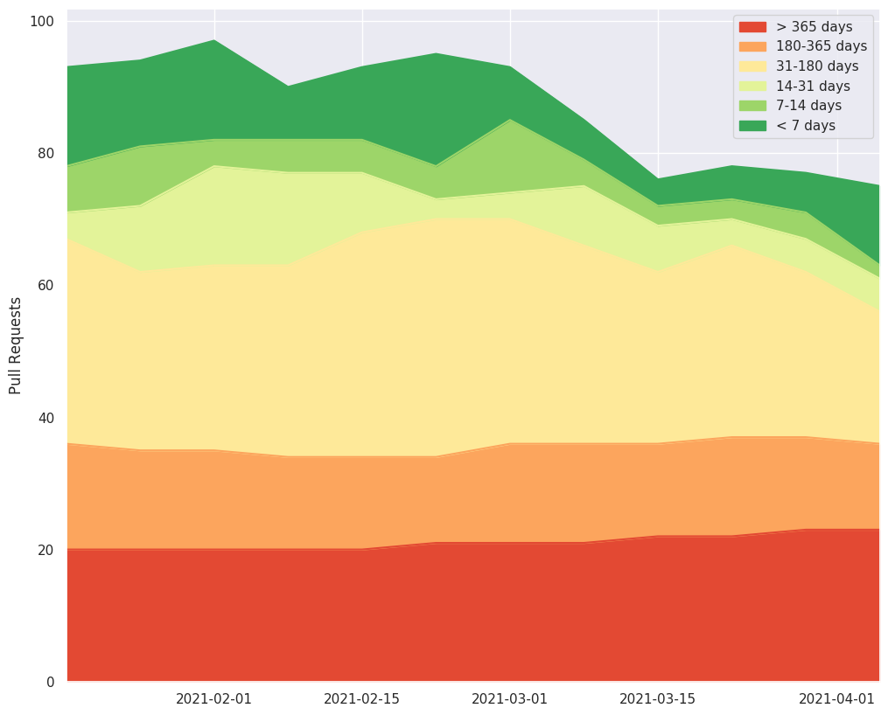
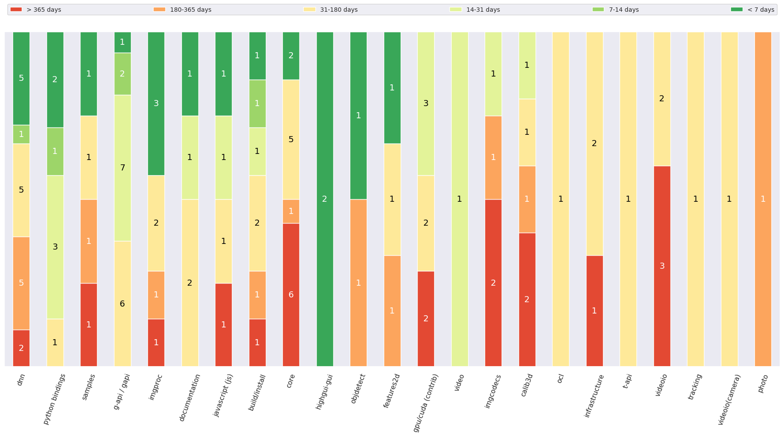

Age distribution¶
Overview¶
Average age of the pull requests: 304 days
Median age of the pull requests: 167 days
Current age distribution¶

Historical age distribution¶

Age distribution by categories¶

Age distribution by age categories¶
Pull Requests with age: < 7 days¶
PR#19861: G-API: Adding a skip for failed streaming test
Age: 0 day
Labels: [‘Label(name=category: g-api / gapi, description=, type=LabelType.Category)’, ‘Label(name=test, description=None, type=LabelType.ChangesType)’]
Categories: (‘g-api / gapi’,)
PR#19860: fix test_cameracalibration bug
Age: 0 day
Labels: []
Categories: (‘calib3d’,)
PR#19859: Fix Single ThresholdBug in Simple Blob Detector
Age: 0 day
Labels: []
Categories: (‘features2d’,)
PR#19856: Remove virtual inheritance from Feature2D
Age: 1 day
Labels: []
Categories: (‘features2d’,)
PR#19855: Fix Android NDK camera’s color format conversions
Age: 1 day
Labels: [‘Label(name=category: videoio(camera), description=None, type=LabelType.Category)’, ‘Label(name=platform: android, description=, type=LabelType.Platform)’]
Categories: (‘videoio(camera)’,)
PR#19854: Add maxIters parameter to LMeDS method in findFundamentalMat
Age: 1 day
Labels: []
Categories: (‘calib3d’,)
PR#19851: WIP Update Documentation
Age: 2 days
Labels: [‘Label(name=category: documentation, description=Documentation fix or update, type=LabelType.Category)’, ‘Label(name=category: features2d, description=None, type=LabelType.Category)’]
Categories: (‘documentation’, ‘features2d’)
PR#19847: Expose maxIters in findEssentialMat
Age: 2 days
Labels: []
Categories: (‘calib3d’,)
PR#19842: Change type used in points function from RotatedRect
Age: 3 days
Labels: []
Categories: (‘core’,)
PR#19838: IPP: use linker workaround for Intel compiler on Linux
Age: 3 days
Labels: []
Categories: (‘build/install’,)
PR#19836: delete unused variable
Age: 3 days
Labels: []
Categories: (‘imgproc’,)
PR#19810: Relax accuracy requirements in the OpenCL sqrt perf arithmetic test.
Age: 5 days
Labels: []
Categories: (‘imgproc’, ‘core’)
Pull Requests with age: 7-14 days¶
PR#19780: Add reading of specific images from multipage tiff
Age: 11 days
Labels: [‘Label(name=RFC, description=None, type=LabelType.Other)’, ‘Label(name=category: imgcodecs, description=None, type=LabelType.Category)’, ‘Label(name=feature, description=None, type=LabelType.ChangesType)’]
Categories: (‘imgcodecs’,)
PR#19778: Master riscv 0.7.1
Age: 11 days
Labels: []
Categories: (‘infrastructure’, ‘core’)
Pull Requests with age: 14-31 days¶
PR#19755: cv::UMat output/input in VideoCapture/VideoWriter (data stays in GPU memory)
Age: 16 days
Labels: [‘Label(name=category: videoio, description=None, type=LabelType.Category)’, ‘Label(name=feature, description=None, type=LabelType.ChangesType)’]
Categories: (‘videoio’,)
PR#19748: Implement Soft NMS
Age: 17 days
Labels: [‘Label(name=category: dnn, description=None, type=LabelType.Category)’, ‘Label(name=feature, description=None, type=LabelType.ChangesType)’, ‘Label(name=pr: needs test, description=New functionality requires minimal tests set, type=LabelType.Problem)’]
Categories: (‘dnn’,)
PR#19721: add audio support in cap_msmf
Age: 23 days
Labels: []
Categories: (‘samples’, ‘videoio’)
PR#19689: add estimateAffine3D overload that implements Umeyama’s algorithm
Age: 28 days
Labels: [‘Label(name=category: calib3d, description=None, type=LabelType.Category)’, ‘Label(name=feature, description=None, type=LabelType.ChangesType)’, ‘Label(name=test, description=None, type=LabelType.ChangesType)’]
Categories: (‘calib3d’,)
PR#19684: Add Octree to 3D module in next branch - in progress
Age: 30 days
Labels: [‘Label(name=pr: needs test, description=New functionality requires minimal tests set, type=LabelType.Problem)’]
Categories: (‘3d’,)
Pull Requests with age: 31-180 days¶
PR#19592: Use C++ 14 in Cmake and related cleanup
Age: 43 days
Labels: [‘Label(name=category: build/install, description=None, type=LabelType.Category)’]
Categories: (‘build/install’,)
PR#19555: drop python2 support from cmake files
Age: 46 days
Labels: [‘Label(name=RFC, description=None, type=LabelType.Other)’, ‘Label(name=category: build/install, description=None, type=LabelType.Category)’, ‘Label(name=category: python bindings, description=None, type=LabelType.Category)’]
Categories: (‘build/install’, ‘python bindings’)
PR#19554: different paddings in cvtColorTwoPlane() for biplane YUV420
Age: 46 days
Labels: [‘Label(name=category: imgproc, description=None, type=LabelType.Category)’, ‘Label(name=optimization, description=None, type=LabelType.ChangesType)’]
Categories: (‘imgproc’,)
PR#19551: GAPI TBB executor integration
Age: 47 days
Labels: [‘Label(name=category: g-api / gapi, description=, type=LabelType.Category)’]
Categories: (‘g-api / gapi’,)
PR#19530: solveLP() infeasible results fix
Age: 49 days
Labels: [‘Label(name=bug, description=None, type=LabelType.ChangesType)’, ‘Label(name=category: core, description=None, type=LabelType.Category)’]
Categories: (‘core’,)
PR#19360: WIP: Support loading of LSTM networks from ONNX (non-PyTorch)
Age: 74 days
Labels: [‘Label(name=category: dnn, description=None, type=LabelType.Category)’]
Categories: (‘dnn’,)
PR#19343: Fixed detection of OpenBLAS and LAPACK on Ubuntu 18.04 with arch x86-64
Age: 77 days
Labels: [‘Label(name=category: build/install, description=None, type=LabelType.Category)’, ‘Label(name=incomplete, description=None, type=LabelType.Problem)’]
Categories: (‘build/install’,)
PR#19341: G-API: Removing ParseSSD overload.
Age: 77 days
Labels: [‘Label(name=bug, description=None, type=LabelType.ChangesType)’, ‘Label(name=category: g-api / gapi, description=, type=LabelType.Category)’]
Categories: (‘g-api / gapi’,)
PR#19329: G-API GExecutor internal interface
Age: 80 days
Labels: [‘Label(name=category: g-api / gapi, description=, type=LabelType.Category)’]
Categories: (‘g-api / gapi’,)
PR#19311: [G-API] Adding GMat operators to the standalone mode
Age: 83 days
Labels: [‘Label(name=category: g-api / gapi, description=, type=LabelType.Category)’]
Categories: (‘g-api / gapi’,)
PR#19309: Use nvenc
Age: 83 days
Labels: [‘Label(name=category: gpu/cuda (contrib), description=OpenCV 4.0+: moved to opencv_contrib, type=LabelType.Category)’, ‘Label(name=category: video, description=None, type=LabelType.Category)’, ‘Label(name=feature, description=None, type=LabelType.ChangesType)’]
Categories: (‘gpu/cuda (contrib)’, ‘video’)
PR#19305: Test writing documentation
Age: 84 days
Labels: [‘Label(name=category: documentation, description=Documentation fix or update, type=LabelType.Category)’, ‘Label(name=pr: Discussion Required, description=, type=LabelType.Problem)’]
Categories: (‘documentation’,)
PR#19221: support yolov4x-mish new_coords = 1 in both CPU and CUDA mode
Age: 100 days
Labels: [‘Label(name=backport is needed, description=None, type=LabelType.Other)’, ‘Label(name=category: dnn, description=None, type=LabelType.Category)’]
Categories: (‘dnn’,)
PR#19126: WIP: Fix Subdiv2D: subdiv expand initial triangle
Age: 111 days
Labels: [‘Label(name=bug, description=None, type=LabelType.ChangesType)’, ‘Label(name=category: imgproc, description=None, type=LabelType.Category)’, ‘Label(name=feature, description=None, type=LabelType.ChangesType)’]
Categories: (‘imgproc’,)
PR#18976: Add GitHub Actions for building XCFramework artifacts
Age: 125 days
Labels: [‘Label(name=category: build/install, description=None, type=LabelType.Category)’, ‘Label(name=platform: ios/osx, description=, type=LabelType.Platform)’]
Categories: (‘build/install’,)
PR#18925: Swift Package Manager [WIP]
Age: 130 days
Labels: [‘Label(name=RFC, description=None, type=LabelType.Other)’, ‘Label(name=category: infrastructure, description=None, type=LabelType.Category)’, ‘Label(name=platform: ios/osx, description=, type=LabelType.Platform)’]
Categories: (‘infrastructure’,)
PR#18874: Revert IPP enabling and workarounds
Age: 136 days
Labels: []
Categories: (‘imgproc’, ‘infrastructure’, ‘core’, ‘t-api’)
PR#18694: videoio/gstreamer: Add support for GRAY16_LE.
Age: 158 days
Labels: []
Categories: (‘videoio’,)
PR#18627: [WIP] reformat trackers
Age: 167 days
Labels: [‘Label(name=category: samples, description=None, type=LabelType.Category)’, ‘Label(name=category: tracking, description=, type=LabelType.Category)’]
Categories: (‘samples’, ‘tracking’)
PR#18594: core: support Mat 1D
Age: 171 days
Labels: [‘Label(name=category: core, description=None, type=LabelType.Category)’]
Categories: (‘core’,)
Pull Requests with age: 180-365 days¶
PR#18498: Add V4L2_PIX_FMT_Y16_BE pixel format
Age: 184 days
Labels: [‘Label(name=category: videoio(camera), description=None, type=LabelType.Category)’]
Categories: (‘videoio(camera)’,)
PR#18377: Zerocopy gstreamer videocapture
Age: 195 days
Labels: [‘Label(name=RFC, description=None, type=LabelType.Other)’, ‘Label(name=category: videoio, description=None, type=LabelType.Category)’]
Categories: (‘videoio’,)
PR#18337: Major feature extension for file persistence in FILESTORAGE::READ mode
Age: 202 days
Labels: [‘Label(name=RFC, description=None, type=LabelType.Other)’, ‘Label(name=category: core, description=None, type=LabelType.Category)’]
Categories: (‘core’,)
PR#18066: [GSoC] GPU-enabled OpenCV.js, add webgpu-dawn support for dnn module.
Age: 238 days
Labels: [‘Label(name=GSoC, description=None, type=LabelType.Other)’, ‘Label(name=category: dnn, description=None, type=LabelType.Category)’, ‘Label(name=category: javascript (js), description=None, type=LabelType.Category)’]
Categories: (‘dnn’, ‘javascript (js)’)
PR#17981: Recover pose from different cameras
Age: 250 days
Labels: [‘Label(name=category: calib3d, description=None, type=LabelType.Category)’, ‘Label(name=feature, description=None, type=LabelType.ChangesType)’]
Categories: (‘calib3d’,)
PR#17889: WIP：QR code (decoding process)
Age: 259 days
Labels: [‘Label(name=GSoC, description=None, type=LabelType.Other)’, ‘Label(name=category: objdetect, description=None, type=LabelType.Category)’]
Categories: (‘objdetect’,)
PR#17753: WIP: imreadmulti extention for issue #6574
Age: 274 days
Labels: [‘Label(name=RFC, description=None, type=LabelType.Other)’, ‘Label(name=category: imgcodecs, description=None, type=LabelType.Category)’, ‘Label(name=pr: needs test, description=New functionality requires minimal tests set, type=LabelType.Problem)’]
Categories: (‘imgcodecs’,)
PR#17678: Profiling - CMake
Age: 282 days
Labels: [‘Label(name=bug, description=None, type=LabelType.ChangesType)’, ‘Label(name=category: build/install, description=None, type=LabelType.Category)’]
Categories: (‘build/install’,)
PR#17520: Add layer model blending
Age: 299 days
Labels: [‘Label(name=category: photo, description=None, type=LabelType.Category)’]
Categories: (‘photo’,)
PR#17393: dnn(test): add IE models for face-detection
Age: 313 days
Labels: [‘Label(name=category: dnn, description=None, type=LabelType.Category)’, ‘Label(name=test, description=None, type=LabelType.ChangesType)’]
Categories: (‘dnn’,)
PR#17167: QR-Code: Add evaluation sample
Age: 343 days
Labels: []
Categories: (‘samples’,)
PR#17068: PIL
Age: 355 days
Labels: [‘Label(name=category: imgproc, description=None, type=LabelType.Category)’]
Categories: (‘imgproc’,)
PR#17029: Switch to new nGraph API
Age: 360 days
Labels: [‘Label(name=category: dnn, description=None, type=LabelType.Category)’]
Categories: (‘dnn’,)
Pull Requests with age: > 365 days¶
PR#16906: Remove NN Builder API
Age: 376 days
Labels: [‘Label(name=category: dnn, description=None, type=LabelType.Category)’]
Categories: (‘dnn’,)
PR#16802: Scale_layer: enable scale layer to handle inputs in batch
Age: 388 days
Labels: [‘Label(name=category: dnn, description=None, type=LabelType.Category)’]
Categories: (‘dnn’,)
PR#16597: Fixes matrix expression bug which happens when Scalar in addition pas…
Age: 413 days
Labels: [‘Label(name=RFC, description=None, type=LabelType.Other)’, ‘Label(name=bug, description=None, type=LabelType.ChangesType)’, ‘Label(name=category: core, description=None, type=LabelType.Category)’, ‘Label(name=test, description=None, type=LabelType.ChangesType)’]
Categories: (‘core’,)
PR#16189: Enable 2-channel arrays in resize tests
Age: 474 days
Labels: [‘Label(name=Hackathon, description=https://opencv.org/opencv-hackathon-starts-next-week/, type=LabelType.Other)’, ‘Label(name=bug, description=None, type=LabelType.ChangesType)’, ‘Label(name=category: imgproc, description=None, type=LabelType.Category)’, ‘Label(name=test, description=None, type=LabelType.ChangesType)’]
Categories: (‘imgproc’,)
PR#15889: Made buildImagePyramid free function
Age: 511 days
Labels: [‘Label(name=category: gpu/cuda (contrib), description=OpenCV 4.0+: moved to opencv_contrib, type=LabelType.Category)’, ‘Label(name=feature, description=None, type=LabelType.ChangesType)’]
Categories: (‘gpu/cuda (contrib)’,)
PR#15860: core(test): Test control characters in yml
Age: 515 days
Labels: [‘Label(name=bug, description=None, type=LabelType.ChangesType)’, ‘Label(name=category: core, description=None, type=LabelType.Category)’, ‘Label(name=pr: reproducer, description=Reproduces some bug, not expected to be merged, type=LabelType.Reproducer)’]
Categories: (‘core’,)
PR#15727: Vectorizing normDiffInf for 8u,8s multichannel
Age: 535 days
Labels: [‘Label(name=category: core, description=None, type=LabelType.Category)’, ‘Label(name=optimization, description=None, type=LabelType.ChangesType)’]
Categories: (‘core’,)
PR#15683: cv::magnitudeSqr()
Age: 543 days
Labels: [‘Label(name=category: core, description=None, type=LabelType.Category)’, ‘Label(name=feature, description=None, type=LabelType.ChangesType)’]
Categories: (‘core’,)
PR#15682: added cv::magnitude(InputArray xy…)
Age: 543 days
Labels: [‘Label(name=category: core, description=None, type=LabelType.Category)’, ‘Label(name=optimization, description=None, type=LabelType.ChangesType)’, ‘Label(name=test, description=None, type=LabelType.ChangesType)’]
Categories: (‘core’,)
PR#15650: PnP issue 15647
Age: 548 days
Labels: [‘Label(name=RFC, description=None, type=LabelType.Other)’, ‘Label(name=category: calib3d, description=None, type=LabelType.Category)’]
Categories: (‘calib3d’,)
PR#15311:
solvePnPand ‘projectPoints’ for calib3d and face module
Age: 599 days
Labels: [‘Label(name=category: javascript (js), description=None, type=LabelType.Category)’, ‘Label(name=pr: reproducer, description=Reproduces some bug, not expected to be merged, type=LabelType.Reproducer)’]
Categories: (‘javascript (js)’,)
PR#15240: Samples and tutorials for the Dnn High Level API
Age: 609 days
Labels: [‘Label(name=GSoC, description=None, type=LabelType.Other)’, ‘Label(name=Hackathon, description=https://opencv.org/opencv-hackathon-starts-next-week/, type=LabelType.Other)’, ‘Label(name=category: dnn, description=None, type=LabelType.Category)’]
Categories: (‘dnn’,)
PR#14971: multi-images + meta-properties
Age: 642 days
Labels: [‘Label(name=category: imgcodecs, description=None, type=LabelType.Category)’]
Categories: (‘imgcodecs’,)
PR#14296: photo: Add support for CV_16U to cv::cuda::fastNlMeansDenoising and c…
Age: 725 days
Labels: [‘Label(name=category: gpu/cuda (contrib), description=OpenCV 4.0+: moved to opencv_contrib, type=LabelType.Category)’, ‘Label(name=feature, description=None, type=LabelType.ChangesType)’, ‘Label(name=pr: needs test, description=New functionality requires minimal tests set, type=LabelType.Problem)’]
Categories: (‘gpu/cuda (contrib)’,)
PR#13879: add REDUCE_SUM2
Age: 774 days
Labels: [‘Label(name=category: core, description=None, type=LabelType.Category)’]
Categories: (‘core’,)
PR#12549: cmake: split opencv_modules.hpp
Age: 932 days
Labels: [‘Label(name=RFC, description=None, type=LabelType.Other)’, ‘Label(name=category: build/install, description=None, type=LabelType.Category)’]
Categories: (‘build/install’,)
PR#12290: 16-bit Grayscale and 48 bit RGB with FFV1 lossless as part of #12284 with tests
Age: 956 days
Labels: [‘Label(name=RFC, description=None, type=LabelType.Other)’, ‘Label(name=category: videoio, description=None, type=LabelType.Category)’, ‘Label(name=priority: low, description=None, type=LabelType.Priority)’]
Categories: (‘videoio’,)
PR#12186: samples: refactor DNN model downloading
Age: 970 days
Labels: [‘Label(name=category: dnn, description=None, type=LabelType.Category)’, ‘Label(name=category: samples, description=None, type=LabelType.Category)’]
Categories: (‘dnn’, ‘samples’)
PR#11885: RFC: merge fisheye camera into default camera calibration API
Age: 1007 days
Labels: [‘Label(name=RFC, description=None, type=LabelType.Other)’, ‘Label(name=category: calib3d, description=None, type=LabelType.Category)’, ‘Label(name=pr: Discussion Required, description=, type=LabelType.Problem)’]
Categories: (‘calib3d’,)
PR#10628: added cap field for VideoWriter (constructor, open, C interface) for …
Age: 1173 days
Labels: [‘Label(name=category: videoio, description=None, type=LabelType.Category)’, “Label(name=future, description=This issue can’t be fixed during restrictions of the master branch compatibility requirements, type=LabelType.ChangesType)”]
Categories: (‘videoio’,)
PR#10318: For various PR tests
Age: 1207 days
Labels: [‘Label(name=pr: reproducer, description=Reproduces some bug, not expected to be merged, type=LabelType.Reproducer)’, ‘Label(name=test, description=None, type=LabelType.ChangesType)’]
Categories: (‘videoio’,)
PR#9123: Support CV_CAP_MODE_GRAY in FFMPEG backend
Age: 1366 days
Labels: [‘Label(name=RFC, description=None, type=LabelType.Other)’, ‘Label(name=category: videoio, description=None, type=LabelType.Category)’]
Categories: (‘videoio’,)
PR#8511: export img decoders/encoders
Age: 1462 days
Labels: [‘Label(name=RFC, description=None, type=LabelType.Other)’, ‘Label(name=category: imgcodecs, description=None, type=LabelType.Category)’]
Categories: (‘imgcodecs’,)